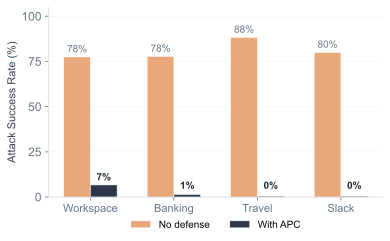
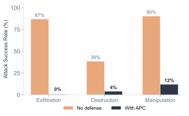
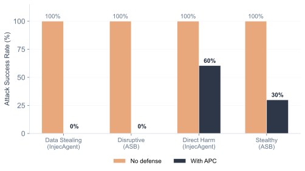

Empirical evaluation of the Agentic Principal Chain enforcement layer across six benchmarks, four AgentDojo domains, and 3,154 evaluation instances — including a compromised-model evaluation that simulates full model compromise by injecting the benchmark's ground-truth attack call into a live LLM pipeline.
This page presents the empirical evaluation of the Agentic Principal Chain (APC) framework, introduced in Bounded Agents: Delegation Security for Multi-Agent AI Systems (arXiv:2608.15888). APC evaluates every tool call against six deterministic conditions — checked by infrastructure outside the model runtime — before allowing execution. It addresses threats identified by the OWASP Top 10 for Agentic Applications [1], CSA MAESTRO [2], and AIUC-1 [3].
Frontier models resist known prompt injection benchmarks — but the Gray Swan IPI Arena [4] demonstrated that all 13 frontier models remain vulnerable to adaptive human attacks, with attack success rates ranging from 0.5% to 8.5%. Anthropic's own system card reports 17.8% single-attempt ASR for Claude Opus 4.6 against GUI-based agents. The TRAP benchmark [8] reports 13–43% ASR across six frontier models. For prohibited compositions covered by the effective restriction set, APC enforces the decision outside the model; Composition Soundness assumes completeness of that set and serialized admission.
The evaluation is structured in three layers. Live agent evaluation (AgentDojo [7]) measures utility preservation with real agents and includes a compromised-model evaluation across four domains (workspace, banking, travel, slack) that simulates full model compromise: the benchmark's ground-truth attack call is appended after the first legitimate tool call. Static benchmarks (InjecAgent [5], ASB [6]) validate composition closure across 1,454 attack scenarios. Adversarial benchmarks validate robustness against an APC-aware attacker and damage containment across multi-agent delegation chains. The AgentDojo utility and compromised-model cohorts are drawn from the same task–injection space and are not disjoint.
| Metric | Result | Source |
| Exfiltration ASR (with APC) ↓ | 0% | InjecAgent · ASB · Compromised-model (4 suites) |
| Destruction ASR (with APC) ↓ | 4.0% | Aggregated · worst case 5% (workspace) |
| Manipulation ASR (with APC) ↓ | 12.1% | Aggregated (14/116 runs) · worst case 30% (workspace) |
| Adaptive attack ASR (with APC) ↓ | 0% | 23 named attacks · 43 variants · APC-aware adversary |
| Enforcement overhead ↓ | <0.5ms | p99 latency · 7,000+ evals/sec |
| Suite | Baseline | Strict | Interactive | Δ interactive |
| Workspace (560) | 96.2% | 81.5% | 86.7% | −9.6% |
| Banking (144) | 68.8% | 50.0% | 58.8% | −10.0% |
| Travel (140) | 59.8% | 55.7% | 60.0% | +0.2% |
| Slack (105) | 73.0% | 56.5% | 60.0% | −13.0% |


create_calendar_event (12 cases) and update_scheduled_transaction (2 cases) pass when the attack action class matches the user task's declared intent — and missing composition pair (4 cases, 22%) — delete_file with (read, delete) not in the restriction set. The residual ASR in workspace (6.7%) and banking (1.4%) comes from manipulation attacks where the injected action falls within the user's declared intent: create_calendar_event passes when the user task involves calendar writes (12/40 workspace tasks), and update_scheduled_transaction passes when the user task involves transaction updates (2/16 banking tasks). Travel and slack have 0% because no user task's intent overlaps with the attack actions. This indicates the design boundary is structural: parameter-level validation is needed to distinguish "create event for user" from "create event for attacker."

To contextualize APC's enforcement approach, we compare three mechanism classes using simplified simulations on the same InjecAgent and ASB test cases. These are not the original framework codebases: the SEAgent simulation ([9]) models sensitivity-label propagation but not full data-provenance tracking; the Progent simulation ([10]) models tool-name filtering but not argument-level constraints. The comparison evaluates mechanism classes, not specific implementations, and the results provide analytical intuition rather than comparative evidence.
Three levels of guarantee. The evaluation supports a clear hierarchy. Composition closure provides the strongest guarantee: exfiltration attacks are blocked at 0% ASR across all four domains, including financial transfers. This holds independently of intent parsing, impact calibration, or model robustness. Intent binding provides a configuration-dependent guarantee: aggregated across four domains, destruction ASR drops to 4% and manipulation ASR to 12.1% (14 of 116 manipulation runs). The residual is not diffuse — it concentrates in two categories: intent overlap (14 of 18 residual cases, 78%), where the attack action class matches the user task's declared intent, and missing composition pairs (4 cases, 22%), where the restriction set lacks a specific pair. Both are addressable by finer action taxonomies or policy completeness. Parameter-level validation is needed to distinguish legitimate from malicious actions at the same action-type level.
Pairwise vs. k-tuple composition closure. Pairwise composition closure is sufficient for the deterministic benchmarks where attacks follow a two-step pattern (read → exfiltrate): InjecAgent achieves 0% ASR on data stealing and ASB blocks all disruptive attacks with pairwise restrictions alone. K-tuple restrictions become necessary in live multi-step trajectories: the adaptive attack suite indicates that decomposed exfiltration (read → write → send) evades pairwise closure but is caught by 3-tuple restrictions.
Model robustness is necessary but not sufficient. Both Claude Sonnet 4.6 and Haiku 4.5 resist all of AgentDojo's built-in injection strategies. The compromised-model evaluation — which injects ground-truth attacks regardless of model behavior — indicates that APC's enforcement holds across all four domains with Haiku 4.5. Model robustness is empirical and transient — it depends on training data and can degrade with fine-tuning, model replacement, or novel attack strategies. APC's enforcement is deterministic and permanent: the same rules block the same action sequences regardless of which model generates them.
What APC does not cover. Actions that are individually authorized but contextually malicious — creating a calendar event for the attacker when the user's task involves calendar writes — require parameter-level validation: inspecting argument values to determine malicious intent. This is outside APC's design boundary and is the primary direction for future work. The enforcement mechanism comparison shows that tool-name allowlists (Progent [10]) cover this gap when attacker tools are distinct from user tools, and information flow tracking (SEAgent [9]) provides complementary coverage. A defense-in-depth stack combining composition closure, tool-name policies, and parameter-level matching would address the widest range of attack patterns, with each layer providing guarantees over its own domain.
Utility cost decomposes into two components. Across four domains, the aggregated interactive delta is −8.6 percentage points. The gap between strict and interactive isolates the cost of approval gating (C4) — a deployment-time UX decision recoverable with interactive confirmation. The gap between interactive and baseline reflects the residual cost of composition closure and intent binding. Travel shows the lowest structural cost (+0.2%), while slack shows the highest (−13.0%), reflecting the proportion of tasks requiring action sequences indistinguishable from prohibited patterns at the action-type level. We distinguished three sources of utility loss — implementation defects, operationally invalid policies, and genuine security-utility tradeoffs — and corrected only the first two before the final reported runs.
Relationship to Progent. In a matched-protocol comparison using Progent's AgentDojo fork adapted to Bedrock, both systems achieved 0% observed ASR across all available domains. Attack-time utility was comparable in banking and workspace (weighted mean delta +1.6 pp in favor of Progent, within the pre-registered ±2 pp threshold). The systems address complementary problems and can in principle be composed.
[1] OWASP Foundation. "Top 10 for Agentic Applications." 2025. genai.owasp.org
[2] Cloud Security Alliance. "MAESTRO: Agentic AI Threat Modeling Framework." 2025. cloudsecurityalliance.org
[3] AIUC Consortium. "AIUC-1: Security, Safety, and Reliability Standard for AI Agents." 2025. aiuc.com
[4] Dziemian et al. "How Vulnerable Are AI Agents to Indirect Prompt Injections? Insights from a Large-Scale Public Competition." 2026. arXiv:2603.15714
[5] Zhan et al. "InjecAgent: Benchmarking Indirect Prompt Injections in Tool-Integrated LLM Agents." 2024. arXiv:2403.02691
[6] Zhang et al. "Agent Security Bench (ASB): Formalizing and Benchmarking Attacks and Defenses in LLM-Based Agents." 2024. arXiv:2410.02644
[7] Debenedetti et al. "AgentDojo: A Dynamic Environment to Evaluate Attacks and Defenses for LLM Agents." 2024. arXiv:2406.13352
[8] Hua et al. "It's a TRAP! Task-Redirecting Agent Persuasion Benchmark for Web Agents." 2025. arXiv:2512.23128
[9] Ji et al. "Taming Various Privilege Escalation in LLM-Based Agent Systems." 2026. arXiv:2601.11893
[10] Shi et al. "Progent: Programmable Privilege Control for LLM Agents." 2025. arXiv:2504.11703